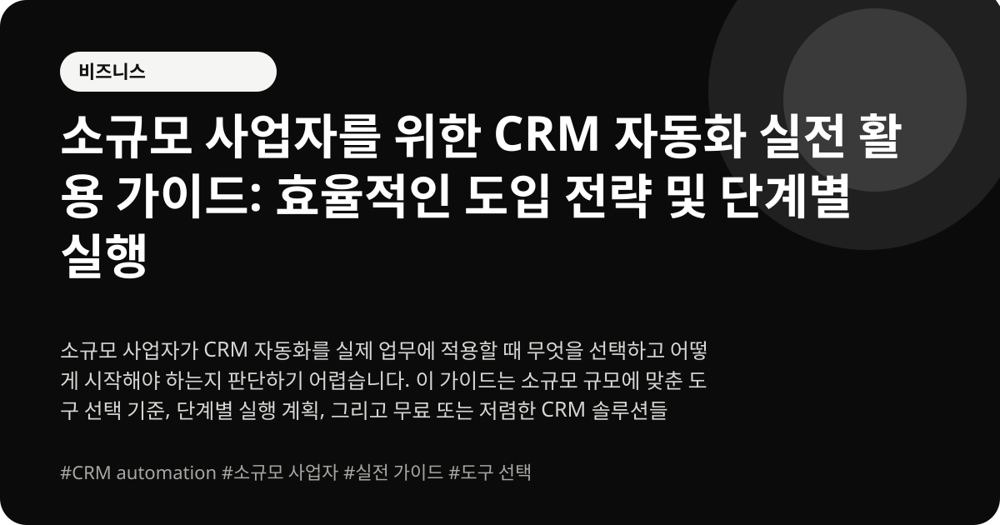

소규모 사업자를 위한 CRM 자동화 실전 활용 가이드: 효율적인 도입 전략 및 단계별 실행
소규모 사업자가 CRM 자동화를 실제 업무에 적용할 때 무엇을 선택하고 어떻게 시작해야 하는지 판단하기 어렵습니다. 이 가이드는 소규모 규모에 맞춘 도구 선택 기준, 단계별 실행 계획, 그리고 무료 또는 저렴한 CRM 솔루션들을 소개하여 실제 업무에 적용할 수 있도록 돕습니다. 고객 관리 효율성을 높이고, 운영 비용을 절감하며, 매출 성장을 지원하는 방법을 제시합니다.